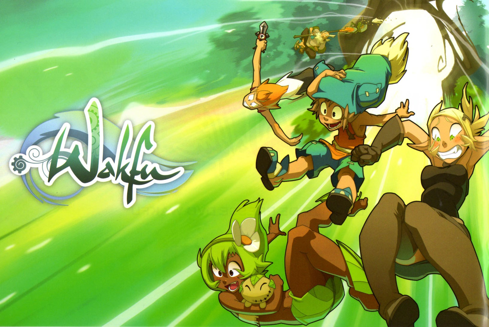
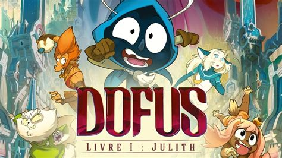
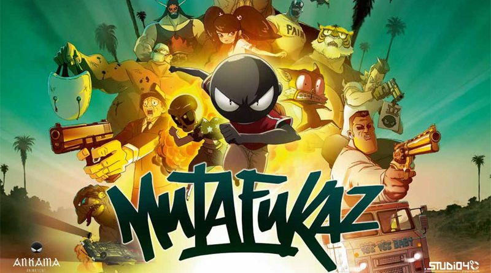
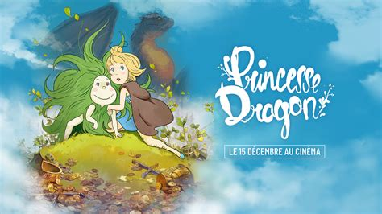
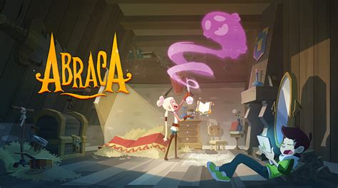

Nos animations

Wakfu
Wakfu est une série d’animation française créée par Anthony Roux. Lancée en 2008, elle s’inscrit dans l’univers du jeu vidéo Dofus.
Synopsis : L’histoire suit Yugo, un jeune garçon doté de pouvoirs mystérieux, qui part à la recherche de ses origines et de sa famille biologique. Accompagné de ses amis, il traverse le Monde des Douze et affronte de nombreux dangers.
Dofus : Livre 1 – Julith
Dofus : Livre 1 – Julith est un film d’animation français réalisé par Anthony Roux et Jean-Jacques Denis. Il est sorti en 2016.
Synopsis : L’histoire suit Joris, un jeune garçon vivant à Bonta avec son père adoptif, Kerubim Crépin. Lorsque la sorcière Julith revient pour se venger, Joris doit protéger Bonta et ses habitants.


Mutafukaz
Mutafukaz est un film d’animation franco-japonais réalisé par Guillaume « Run » Renard et Shojiro Nishimi. Il est sorti en 2018.
Synopsis : L’histoire suit Angelino, un jeune homme vivant à Dark Meat City. Après un accident de scooter, il commence à avoir des visions inquiétantes et découvre qu’il est poursuivi par de mystérieux agents.
Princesse Dragon
Princesse Dragon est un film d’animation français réalisé par Jean-Jacques Denis et Anthony Roux. Il est sorti en 2021.
Synopsis : Poil, une jeune fille élevée par une dragonne, découvre le monde des humains et doit affronter de nombreux dangers pour protéger sa famille.


Abraca
Abraca est une série d’animation française créée par Ankama. Elle s’inspire des contes de fées et de la magie.
Synopsis : Abraca voyage dans un monde rempli de créatures magiques, de sorciers et de personnages inspirés des contes traditionnels.
Dofus : Aux trésors de Kerubim
Dofus : Aux trésors de Kerubim est une série d’animation française créée par Ankama et diffusée à partir de 2013.
Synopsis : Kerubim Crépin, ancien aventurier devenu commerçant, raconte à Joris les aventures extraordinaires qu’il a vécues autrefois.